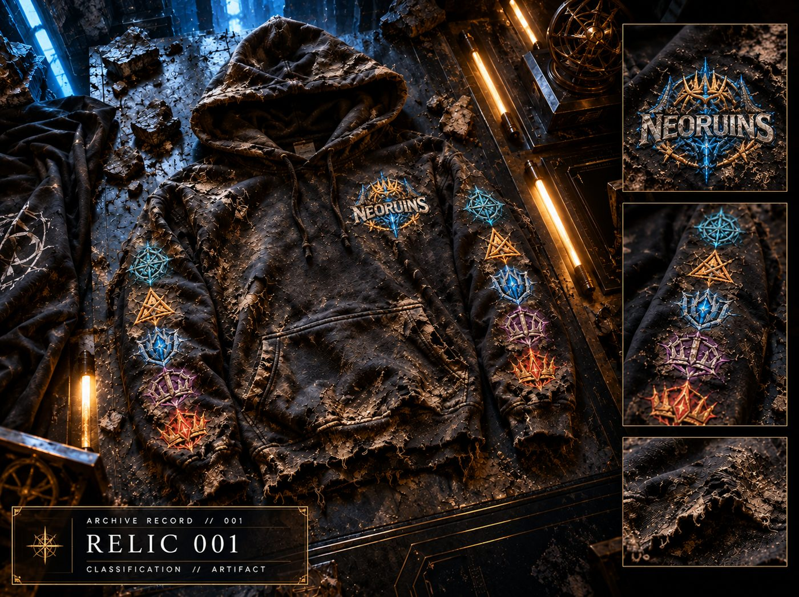

The Ruins were considered inactive.
No confirmed recoveries had been recorded. No evidence remained that anything was waiting to be found.
That assessment was incorrect.
The first artifact was not discovered during an excavation. It was discovered because something beneath the Ruins responded.
The recovery was not planned. The archive does not find things; things allow themselves to be found. Relic 001 surfaced the way all true things surface: without permission, and without explanation.
Relic 001 is the first recovered Relic of Chapter I. It is real. It is here.
ARCHIVE RECORD // 001
RELIC 001
CLASSIFICATION // ARTIFACT
STATUS // RECOVERED
RECOVERED // CHAPTER I — THE AWAKENING
ORIGIN // UNKNOWN
ARCHIVE STATUS // OPEN
RECOVERY LOG // 001
The artifact was recovered intact.
No corresponding record of its manufacture, origin, or intended purpose has been identified.
The markings present across the artifact remain under examination.
UNREVEALED — Relic origin, discovery location, timeline details, and meaning of markings remain under archival seal.

RELIC 001 // RECOVERED ARTIFACT